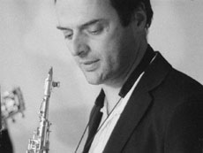

|
ATTICA
Manon de Boer | NL/B 2008 | 9'55''
Material : 16mm
Originalsprache: Englisch
Drehbuch: Manon de Boer
Kamera: Sébastien Koeppel
Schnitt: Stempel sprl
Ton: Aline Blondiau
Musik: "Coming Together" (Fragment) & "Attica" (1972) von Frederic Rzewski
Mit Laurent Blondiau (Trompete), George
van Dam (Violine), Emmanuel Louis (Elektrische Gitarre), Jan Rzewski (Stimme, Saxophon)
Produktion: Fine Arts Unternehmen video + film, Berlin, Jan Mot, Brüssel
www.augusteorts.be
"Attica is in front of me." Diese Worte wurden von Richard S. Clark ausgesprochen bei der Niederschlagung des Gefangenenaufstandes im amerikanischen Attica. Im selben Jahr, 1972, entstand die Komposition "Attica" von Frederic Rzewski, der seinem Lied eine Zirkelstruktur gegeben hat, mit euphorischem Crescendo und seiner Auflösung, mit der anhebenden und schwächer werdenden Sentenz "Attica - is - in - front - of - me".
In einem einzigen langen und kreisförmigen Kameraschwenk filmt Manon de Boer die Musiker, die "Attica" und ein weiteres Stück von Rzewski, "Coming Together" (1972), inspiriert durch den Brief eines Attica-Gefangenen, performen. Kamera und Musik inszenieren die Geschichte von Attica in der Schleife ihrer möglichen, endlosen Wiederholung.
Manon de Boer, geb. 1966 in Kodaicanal/Indien. Studium an der Akademie der Bildenden Künste in Rotterdam und an der Reichsakademie der Bildenden Künste in Amsterdam. Sie lebt und arbeitet in Brüssel. Sie macht Filme, Videos, Installationen und unterrichtet an der Kunstakademie KASK in Gent. Sie gehört der Produktions- und Distributionsgemeinschaft Auguste Orts an.
Filme (Auswahl): Attica 2008 | Two Times 4'33" 2008 (UNDERDOX 03) | Villes Saisies 2007 | Presto, Perfect Sound 2006 | Resonating Surfaces 2005 (UNDERDOX 01) | Sylvia Kristel – Paris 2003 (UNDERDOX 01) | Recalling Names and Places 1999 | Laurien 1996
Ausstellungen (Auswahl): Frankfurter Kunstverein 2008 | Witte de With, Rotterdam 2008 | Artists in Focus, Vaila do Cone, Portugal 2005 | Resonating Surfaces, Galerie Jan Mot, Brussels 2005 | Sylvia Kristel, Jan Mot 2003 | Laurien, SKOR, Amsterdam 2002
Gruppenausstellungen (Auswahl): Berlin Biennale 2008 | 52. Biennale von Venedig 2007 | 38. Art Basel, Jan Mot 2008 | Don Quijotte, Witte de With, Rotterdam 2006 | Thomas Kratz, Goethe Institut, Casablanca 2006 Documentary Creations, Kunstmuseum, Luzern 2005
zurück
|